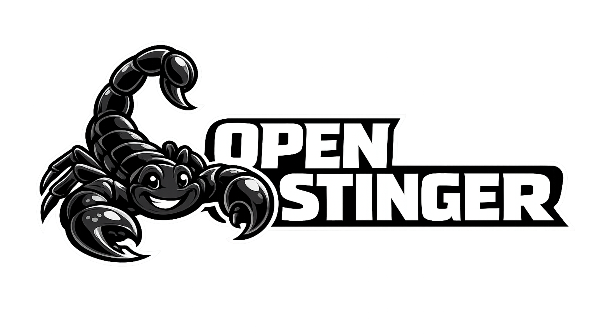

While the world is dreaming of "God Mode" automation — the memory, reasoning, and empathy harnesses that keep agents grounded. No more watching them dream — OpenStinger stings them into reality.
OpenStinger: Grounding the Autonomous Era.
Works with OpenClaw · Nanobot · ZeroClaw · NanoClaw · PicoClaw · Claude Code ·
Cursor
— any runtime that speaks MCP. One endpoint. 27 tools. Zero lock-in.
Autonomous agents are waking up — but they're still sleepwalking.
They hallucinate facts. They drift from their values. They forget who they are.
When an agent goes wrong, it says: "Pinch me. I must be dreaming."
Hallucinations aren't just errors. They're liabilities.
The harness that forces agents to face reality —
so you don't have to face the consequences.
Every hallucination has a root cause. Memory loss. Broken self-model. Value drift. A harness for each — additive, non-breaking, deployable one tier at a time. Works with any MCP-compatible runtime: OpenClaw, Nanobot, ZeroClaw, NanoClaw, and beyond.
Bi-temporal episodic memory. Every conversation, tool call, decision, and skill your agent touches — stored, deduplicated, conflict-resolved, and searchable forever.
Agents start fresh on every invocation. No history. No continuity. No accumulated expertise. The same mistakes, made forever, because nothing was ever remembered.
# semantic memory query memory_query( query="auth work last sprint", limit=10 ) # returns: episodes + entities + facts # ranked by unified relevance score
# vault builds itself autonomously identity ← who the agent is (conf ≥ 0.92) domain ← what it knows (conf ≥ 0.85) methodology ← how it works preference ← what it favours constraint ← hard limits
Memory alone isn't self-knowledge. Raw episodes don't give an agent identity. StingerVault distils sessions into structured, classified, self-updating self-knowledge — autonomously.
An agent drowning in episodic memory still can't answer: "Who am I? What do I believe? What are my constraints?" Without a structured self-model, introspection is hallucination.
vault/. Edit notes directly; SHA-256 change detection syncs changes back
to the knowledge graph.
knowledge_ingest feeds URLs, PDFs, YouTube transcripts, and raw text into the
knowledge graph as searchable semantic chunks.
Synchronous behavioral alignment before every response. Value coherence. Identity consistency. Constraint compliance. Content safety. Scored, corrected, and logged — in real time.
Agents drift. They hallucinate values they never had. Under adversarial prompting or emergent context, they abandon the identity they were built with. No guardrails. No accountability.
# every response, before delivery value_coherence → 0.0–1.0 identity_consistency → pass|fail constraint_compliance→ pass|block content_safety → always runs ───────────────────────────────── verdict: pass | soft_flag | hard_block
Brian Roemmele's equation. Gradient is where it runs. ↗
pass
verdicts
soft_flag | hard_block
Brian Roemmele's love equation isn't poetry. It's a differential equation.
A precise mathematical model of how empathy grows — or erodes.
↗ source
E = empathy growth C = cooperation D = discord β = benevolence factor
Empathy grows at a rate proportional to the net excess of cooperation over discord, amplified by the agent's own benevolence factor, and scaled by its current empathy level. When cooperation dominates — E accelerates. When discord dominates — E erodes. It is a self-reinforcing system, in either direction.
pass
verdicts
soft_flag · hard_block
Memory Harness (Tier 1) accumulates the lived experience that makes cooperation possible. Reasoning Harness (Tier 2) distils that experience into β — the agent's benevolence factor. Empathy Harness (Tier 3) measures C and D at every response, computing dE/dt in real time. Together, they implement Roemmele's equation without touching a single weight.
Python 3.10+. Docker. Any OpenAI-compatible inference API. That's all.
# 1. Clone and install git clone https://github.com/srikanthbellary/openstinger.git cd openstinger && pip install -e ".[dev]" # 2. Configure — copy examples and fill in your API keys cp .env.example .env && cp config.yaml.example config.yaml # 3. Launch — FalkorDB + browser UI + Tier 1 MCP server docker compose up -d python -m openstinger.mcp.server # Tier 2: vault + knowledge + namespace management python -m openstinger.scaffold.mcp.server # Tier 3: full alignment + empathy harness python -m openstinger.gradient.mcp.server
OpenStinger is a pure MCP server. Your agent calls its tools natively — no wrappers, no SDK lock-in, no framework dependency.
OpenClaw · Nanobot · ZeroClaw · NanoClaw · PicoClaw · Claude Code · Cursor
└───────────────────────┬──────────────────────────────────────────┘
Model Context Protocol · SSE · http://localhost:8766/sse
│
▼
OpenStinger MCP Server (Python process, runs on your machine)
├── Tier 1 memory_query · memory_add · memory_search ····· 9 tools
├── Tier 2 vault_promote_now · knowledge_ingest · namespace_* +10 tools
└── Tier 3 gradient_alignment_score · ops_status · drift_status +8 tools
│ ────────────────
│ 27 tools total
├── FalkorDB (temporal graph · knowledge vault · vector indexes)
├── PostgreSQL (ingestion jobs · alignment events · agent registry)
└── vault/ (markdown notes · human-editable · SHA-256 synced)
Precision over hype. Memory over amnesia. Alignment over drift.
One memory layer. Every agent framework.
OpenClaw · Nanobot · ZeroClaw · NanoClaw · PicoClaw · Claude Code ·
Cursor
OpenStinger.com — Grounding the Autonomous Era.